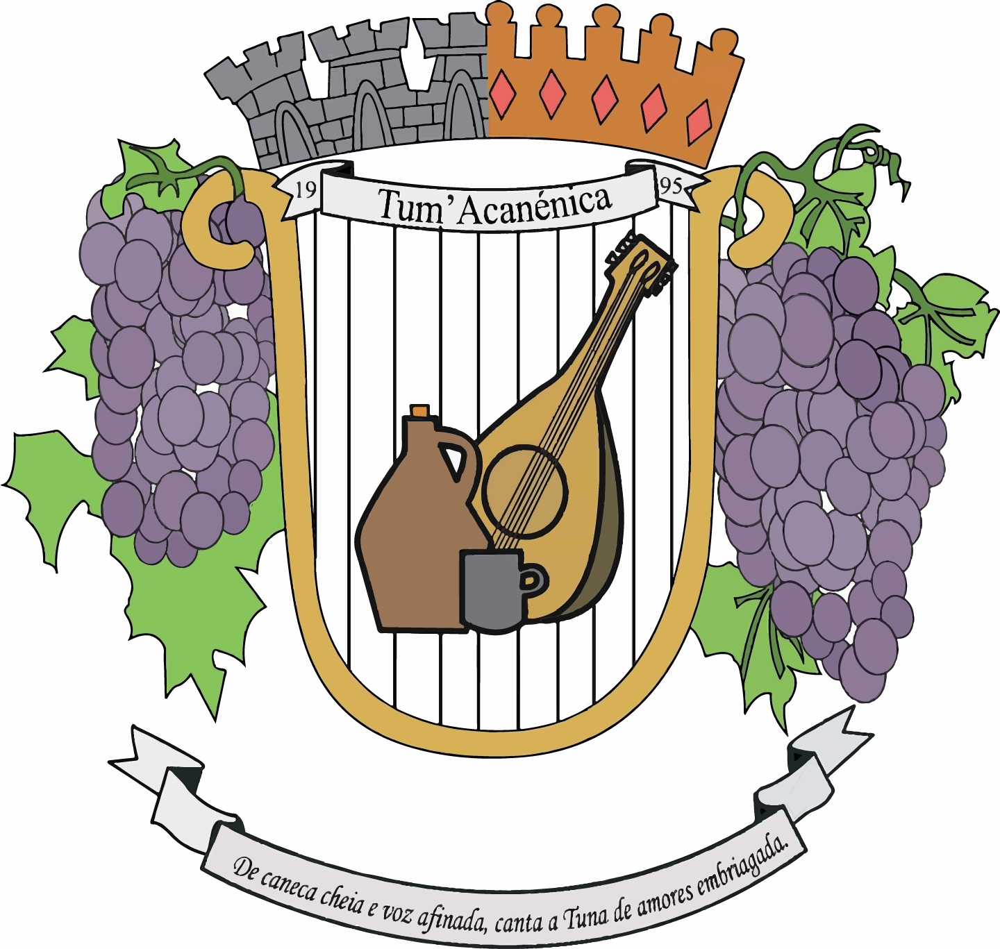

Segunda Aula
Para fazer uma quebra de linha adicionamos a tag <br>
Para mostrar amor vou mostrar um emoji ❤
Abrir o site do Sapo
Voltar à Página Inicial


- Dar comida ao Ichi
- Comprar as coisas para a Aiko
- Arranjar o cantinho para a Aiko
- Joana
- Alexandra
- Isabelinha
- Ribeiro